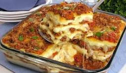

✨ Sobre a Receita
A lasanha à bolonhesa é um dos pratos mais tradicionais e queridos da culinária italiana. Com camadas de massa, molho de carne, presunto e queijo, ela é uma excelente opção para um almoço especial ou um jantar em família.
📋 Informações
| Informação | Detalhes |
|---|---|
| ⏱️ Tempo de preparo | 50 minutos |
| 🍽️ Rendimento | 6 porções |
| 📊 Dificuldade | Fácil |
| 🔥 Temperatura | 180 °C |
🛒 Ingredientes
🥩 Molho à Bolonhesa
- 500 g de carne moída
- 1 lata de molho de tomate
- 1 cebola média picada
- 2 dentes de alho picados
- 1 colher de sopa de azeite
- Sal a gosto
- Pimenta-do-reino a gosto
- Orégano a gosto
🧀 Montagem
- 1 pacote de massa para lasanha
- 300 g de queijo mussarela
- 200 g de presunto
- 50 g de queijo parmesão ralado
👨🍳 Modo de Preparo
- Prepare o molho: aqueça o azeite em uma panela e refogue a cebola e o alho até dourarem.
- Adicione a carne: coloque a carne moída e cozinhe até que fique bem dourada.
- Tempere: acrescente o molho de tomate, sal, pimenta-do-reino e orégano.
- Cozinhe: deixe o molho cozinhar por aproximadamente 10 minutos.
- Monte a primeira camada: coloque uma pequena quantidade de molho no fundo da forma.
- Faça as camadas: coloque massa, molho, presunto e queijo mussarela.
- Repita o processo até utilizar todos os ingredientes.
- Finalize: cubra com mussarela e queijo parmesão ralado.
- Asse: leve ao forno preaquecido a 180 °C durante aproximadamente 30 minutos.
- Sirva: retire do forno e espere aproximadamente 5 minutos antes de cortar.
📸 Resultado

💡 Informações Extras
Ver dicas para deixar a lasanha ainda melhor
- Deixe a lasanha descansar por aproximadamente 5 minutos antes de servir.
- Use queijo mussarela de boa qualidade para conseguir uma cobertura bem cremosa.
- Você pode substituir a carne bovina por frango desfiado.
- Para uma versão mais cremosa, acrescente molho branco entre as camadas.
- O queijo parmesão ajuda a deixar a superfície mais dourada e crocante.